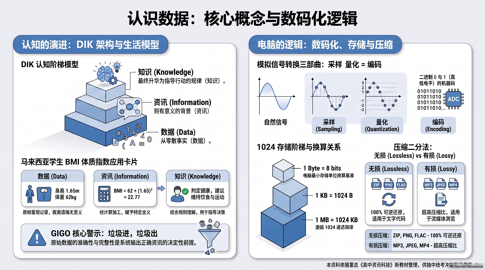

一、 单元教学与复习目标导航
1.1 课程标准核心素养
依据董教总华文独中工委会统一课程委员会《资讯科技课程标准》，本章作为全套教材的奠基章，旨在引导学生建立现代数据意识与数字素养：
- 数据与信息素养：准确理解数据、资讯与知识的递进关系，树立正确的数据真实性意识（GIGO 原则）；
- 数码化核心原理与计算能力：掌握现实类比讯号转变为计算机离散数码讯号的基本过程，熟练运用图像与音频存储容量计算公式；
- 技术利弊辨析思维：辩证分析数码化阅读对传统纸质阅读的影响，辨析无损压缩与有损压缩的应用边界；
- 前沿数据科学与自主学习能力：理解大数据核心 4V 特征与生活应用，掌握数码化学习模式及主流协同工具。
1.2 师生教学达成清单 (Checklist)
二、 本章全景多媒体教学幻灯图谱 (NotebookLM 12页精编导引)

🖼️ 【全景幻灯 01 导读】全章知识架构与核心素养：从原始物理符号到智慧决策洞察，本章全面打通“数据认识 → 资讯数码化 → 大数据赋能”的全知识链条。
三、 课本官方中英对照核心术语速查表
（严格依据《资讯科技第 1 册：中英名词对照表》收录）：
| 中文术语 | 英文术语 | 课本核心概念阐释 |
|---|---|---|
| 数据 / 资料 | Data | 未经加工处理的原始资料或事实记录，孤立存在时没有特定意义。 |
| 资讯 / 信息 | Information | 经过加工处理后有用的或有意义的数据，借以传达某些特定讯息。 |
| 知识 | Knowledge | 通过观察、实验、分析对资讯进行归纳所获得的认知与能力，用于决策与解决问题。 |
| 数码化 / 数字化 | Digitization | 将文字、图像、声音和视频等现实数据转换成电脑可识别的离散二进制数码格式的过程。 |
| 类比讯号 / 模拟信号 | Analog Signal | 在时间与数值上均呈连续变化的物理讯号（如连续声波、电压）。 |
| 数码讯号 / 数字信号 | Digital Signal | 在时间与幅度上呈离散状态的二进制讯号（由 0 与 1 组成）。 |
| 位元 / 比特 | Binary Digit, Bit | 电脑中最小的数据存储与运算单位，取值为 0 或 1。 |
| 位元组 / 字节 | Byte (B) | 电脑中计量容量的基本单位，1 Byte = 8 bits。 |
| 像素 | Pixel | 构成点阵数码图像的最小可控制色彩单点。 |
| 采样 / 取样 | Sampling | 在连续时间轴上以固定的时间间隔截取声音波形振幅值的过程。 |
| 量化 | Quantization | 将采样得到的连续振幅值转换为有限个离散数值等级的过程。 |
| 点阵图 / 光栅图 | Raster Graphic | 由像素网格矩阵排列构成的图像，放大过度会产生模糊或锯齿（失真）。 |
| 向量图 / 矢量图 | Vector Graphic | 由数学公式和几何指令描述点、线、面的图像，无论放大或缩小均保持清晰平滑。 |
| 无损压缩 | Lossless Compression | 消除数据统计冗余的压缩技术，解压后能 100% 完整还原原始数据。 |
| 有损压缩 | Lossy Compression | 永久移除人类视听感官不易察觉的数据以换取极高压缩比的压缩技术，不可逆。 |
| 大数据 / 巨量资料 | Big Data | 具有规模巨大、种类繁多、产生快速且蕴含巨大价值特性的海量数据集。 |
四、 课本重点分节地毯式精讲（教学教案与详尽复习）
4.1 数据、资讯与知识 (Data, Information, Knowledge)
(1) 三层递进体系与数据品质法则
- 数据 (Data)：
- 本质：客观世界原始的、未加工的事实或符号记录。
- 特点：缺乏上下文关联，不能直接解释事物状态。
- 资讯 (Information)：
- 本质：数据经过整理、分类、统计或计算处理后，赋予了特定背景和语境。
- 特点：具有明确意义，能够回答“是什么 (What)”。
- 知识 (Knowledge)：
- 本质：对资讯进行分析、理解、归纳，并与行业经验或客观规则结合形成的认知。
- 特点：用于指导行动、预测趋势并作出决策，回答“如何做 (How)”。
- 数据品质四要素与 GIGO 原则：
- 准确性 (Accuracy)、完整性 (Completeness)、时效性 (Timeliness)、一致性 (Consistency)。
- GIGO 原则 (Garbage In, Garbage Out)：输入垃圾数据，产出的必然是错误资讯与劣质决策。数据清洗与核验是数据处理的前提。

🖼️ 【全景幻灯 02 导读】DIK 认知阶梯与数据品质基石：形象展现从底层原始符号，经结构化加工上升为资讯，再结合业务逻辑升华至决策知识，并揭示 GIGO 规律。
(2) 课本权威情境剖析：小明体温健康监测案例
董总课本与官方参考答案通过“人体体温”给出了标准示范：
- 数据层面 (Data)：
小明这几天的体温测量记录：37.8°C, 38.5°C, 39.2°C, 38.6°C, 38.8°C。（纯粹的原始数字记录）
- 资讯层面 (Information)：
小明这段时间内的平均体温为 38.58°C；最高体温是 39.2°C，最低体温是 37.8°C。（经过数学处理，具备统计意义）
- 知识层面 (Knowledge)：
已知人体正常体温范围为 36.5°C ~ 37.2°C。通过对比发现小明的平均体温明显超出正常范围，判断小明正处于发烧状态，需要采取物理降温或就医治疗。知识使我们理解数据背后的含义并采取医疗行动。

🖼️ 【全景幻灯 03 导读】课本体温医疗决策闭环：完整呈现从小明 5 次测温原始数据，到发烧资讯分析，再到就医诊断与学校传染病防控知识的全流程。
👨🏫 教师课堂精讲点拨与互动提问：
- 设问：“如果在超市结账单上看到一串数字 012845，这是数据、资讯还是知识？”
- 解析引导：若单独存在，它只是“数据”；若标明“商品条码编号为 012845，售价 RM12.50”，则成为“资讯”；若店长根据该商品近一个月销量暴增，决定“下周增加该商品进货量 30%”，则上升为“知识”。
4.2 资讯数码化 (Information Digitization)
(1) 数码化的概念与物理本质
- 定义：将各种形式的现实数据（文字、图像、声音、视频），转换成电脑可以理解和处理的二进制格式 (0 和 1) 的过程。
- 类比讯号 vs 数码讯号：
- 类比讯号 (Analog)：在时间和幅度上连续变化，如现实中的声波、光线。易受环境杂波与电磁干扰，长途传输易失真。
- 数码讯号 (Digital)：在时间和幅度上均为离散的高低电平（0 和 1）。抗干扰能力极强，具备纠错机制，易于网络传输、海量存储与电脑自动化处理。
- 模数转换 (ADC, Analog-to-Digital Converter)：现实连续物理量进入计算机的必经桥梁。

🖼️ 【全景幻灯 04 导读】资讯数码化核心原理与讯号对比：直观展示连续正弦波（类比）到阶梯状离散方波（数码）的物理转变，梳理数码化带来的 4 大核心技术红利。
(2) 载体演进：数码化阅读 vs 纸质阅读（课本经典研讨题）
课本深入讨论了数码化阅读与传统纸质阅读的优劣对比：
| 比较维度 | 数码化阅读 (Digital Reading) | 传统纸质阅读 (Paper Reading) |
|---|---|---|
| 主要优点 | ① 载体小巧、携带便捷（一部电子书可装上万册书）； ② 多媒体交互，可嵌入声音、视频、动画，生动直观； ③ 资讯海量、检索极快； ④ 软件人性化（自由调节字体、字号、夜间亮度）； ⑤ 边际成本低，费用相对廉宜； ⑥ 环保，无需砍伐树木造纸； ⑦ 内容在线实时更新（科技书籍更新快捷）。 | ① 质感温润，翻阅翻找习惯好，阅读专注度高； ② 不受电力、电池续航、网络及软硬件故障限制； ③ 相比发光屏幕，漫反射阅读对眼睛和视力损伤较小； ④ 具有实体收藏和纪念价值。 |
| 主要缺点 | ① 高度依赖电子设备、电池与网络，故障时无法阅读； ② 屏幕蓝光容易导致视疲劳与视力下降； ③ 资讯纷繁庞杂，容易分心，削弱深度思考与专注力。 | ① 厚重笨重，携带搬运不便，占用大量物理收纳空间； ② 检索和查找特定段落耗时耗力； ③ 生产印刷需要消耗木材资源，易受潮老化。 |
| 核心理念 | 两者并不矛盾，而是各具优势、取长补短、相辅相成。技术提供了多元选择，知识内核是恒定的。 |

🖼️ 【全景幻灯 05 导读】数码阅读与传统阅读的博弈天平：天平两端清晰呈现 7 大现代数码优势与 3 大生理心理挑战，为统考议论文与分析题提供最标准作答骨架。
(3) 文字数码化与编码容量推导
- ASCII 码 (American Standard Code for Information Interchange)：
- 采用 7 个位元 编码（标准 ASCII），可表示 2⁷ = 128 个字符（涵盖英文字母、数字 0~9、控制字符与常用符号）。
- 后续扩展为 8 个位元（1 个位元组 Byte），可表示 2⁸ = 256 个字符。
- 💡 课本深入思辨题（课本学习评量第 9 题）：
题目：“若将 ASCII 扩充至 16 个位元，它能表示的字符数是否翻倍？对电脑性能有何影响？”
权威解析：
1. 字符数并非翻倍，而是呈指数级暴增：16 个位元能表示的字符总数为 2¹⁶ = 65,536 个字符，远远大于 8 位的 256 个字符。
2. 对电脑的影响：由于每个字符占用的存储空间从 1 Byte 翻倍至 2 Bytes，文字数据占用的内存（RAM）和外存空间成倍增加，导致可用记忆体减少，可能间接拖慢电脑运行速度。

🖼️ 【全景幻灯 06 导读】文字编码进阶与 RAM 性能博弈：深入阐释 2ⁿ 指数爆炸律，解析 Unicode/16位编码在包容全球多国文字（65536字符）与消耗双倍存储资源之间的工程权衡。
(4) 声音数码化：模数转换 (ADC) 与存储容量计算
声音数码化三大核心物理过程：
- 采样 (Sampling)：以固定频率定期采集声音波形的即时振幅。
- 采样频率 (Sampling Rate)：每秒钟采样的次数，单位为赫兹（Hz）或千赫（kHz）。如 22.05 kHz = 22,050 Hz；CD 音质为 44.1 kHz = 44,100 Hz。
- 量化 (Quantization)：将采集到的连续振幅值映射为离散的量化等级。
- 量化位元数 (Bit Depth)：记录每个采样振幅所使用的二进制位数。如 8-bit（256级）、16-bit（65536级，CD 标配）。
- 编码 (Coding)：将量化后的数值转化为二进制代码（0 和 1）并依次存储。

🖼️ 【全景幻灯 07 导读】声音数码化物理三步曲：图解声音从连续波形到离散脉冲采样、再到标尺量化与二进制编码的微观全流程，详解 44.1 kHz / 16 位 CD 音质标准。
声音文件存储容量官方计算公式：
📐 【声音存储容量核心公式】：
- 字节容量 (Bytes) = [采样频率 (Hz) × 量化位元数 (bits) × 声道数 × 时长 (秒)] ÷ 8
- 千字节 (KB) = 字节容量 (Bytes) ÷ 1024
- 兆字节 (MB) = 容量 (KB) ÷ 1024
📝 课本权威例题推演（学习评量第 10 题）：
题目：一段采样频率为 22.05 kHz、量化位元数为 8 位、双声道（声道数=2）、录音时长 10 秒的未压缩声音文件，其存储容量为多少 KB？
解题步骤：
1. 单位换算：22.05 kHz = 22,050 Hz；录音时长 = 10 秒；双声道 = 2。
2. 计算字节数：
> - 第 1 步（代入算式求字节）：容量 (Bytes) = (22,050 Hz × 8 bits × 2 声道 × 10 秒) ÷ 8 = 441,000 Bytes
3. 换算为 KB：
> - 第 2 步（换算为 KB 存储量）：441,000 ÷ 1024 ≈ 430.66 KB
标准答案：430.66 KB。

🖼️ 【全景幻灯 08 导读】声音容量计算金牌公式与规范解题：四要素公式拆解、除以 8 与除以 1024 的踩坑预警，配合课本第 15 页 430.66 KB 例题规范板书。
(5) 图像数码化与容量计算
点阵图 vs 向量图：
- 点阵图 (Raster Graphic)：由许多排列成网格的像素点（Pixels）构成。色彩丰富、层次细腻，适合真实照片；缺点是放大后会产生锯齿失真或模糊马赛克。常见格式：BMP, JPEG, PNG, GIF。
- 向量图 (Vector Graphic)：使用数学公式和几何指令（如点坐标、线条曲率、填充色）来记录图像。文件体积小，任意放大、缩小或旋转均绝对不失真；适合图标、企业标志（Logo）、机械图纸。常见格式：SVG, AI, EPS。
点阵图存储容量官方计算公式：
📐 【点阵图像存储容量核心公式】：
- 字节容量 (Bytes) = [水平像素数 W × 垂直像素数 H × 颜色深度 (bits)] ÷ 8
- 兆字节 (MB) = 字节容量 (Bytes) ÷ (1024 × 1024)
📝 课本权威例题推演（学习评量第 11 题）：
题目：一张分辨率为 4000 × 3000 像素、颜色深度为 24 位元的未压缩数码照片，其占用的存储容量为多少 MB？
解题步骤：
1. 计算总字节数：
> - 第 1 步（代入算式求字节）：容量 (Bytes) = (4000 × 3000 × 24 bits) ÷ 8 = 4000 × 3000 × 3 = 36,000,000 Bytes
2. 连续除以 1024 换算为 MB：
> - 第 2 步（换算为 MB 存储量）：36,000,000 ÷ (1024 × 1024) = 36,000,000 ÷ 1,048,576 ≈ 34.33 MB
标准答案：约 34.3 MB。

🖼️ 【全景幻灯 09 导读】图像数码化与容量严谨推导：点阵与矢量成像原理微观对比、24位真彩色（8+8+8）构成，以及 34.33 MB 标准解题步骤全览。
(6) 视讯数码化与数据压缩技术
视讯数码化核心原理：
- 帧率 (FPS, Frames Per Second)：利用人眼的“视觉暂留”生理机制，以每秒播放 24~60 幅静态连续画面呈现流畅动态影像。
- 未压缩视讯的容量挑战：1 秒未经压缩的 1080p 视讯约需消耗 180 MB，一部电影将达到上百 GB，因此压缩技术是多媒体网络传输的生命线。
数据压缩两大流派深度对比：
| 比较维度 | 无损压缩 (Lossless Compression) | 有损压缩 (Lossy Compression) |
|---|---|---|
| 压缩原理 | 找出并消除数据中重复的统计冗余，完整保留所有原数据。 | 利用人类生理感知限制，主动丢弃眼睛或耳朵不敏感的细节。 |
| 数据还原度 | 100% 完整复原，解压后与压缩前毫无差别。 | 不可逆，丢失的细节永久无法找回。 |
| 压缩比率 | 较低（通常约为 2:1 ~ 3:1）。 | 极高（通常在 10:1 ~ 20:1 甚至更高）。 |
| 常见格式 | ZIP, 7z, RAR, PNG, GIF, FLAC, BMP | JPEG/JPG, MP3, AAC, MP4, MPEG |
| 适用领域 | 软件程序代码、数据库档案、财务报表、医疗高清影像。 | 网络网页图片、流媒体音乐平台、短视频与网络直播。 |

🖼️ 【全景幻灯 10 导读】视讯原理与压缩技术博弈：全景对比无损（数据安全第一）与有损（传输效率第一）的设计哲学，分类列举独中统考高频格式。
4.3 数据科学与大数据 (Data Science & Big Data)
(1) 大数据的来源与数据生成源泉
在当代数码化社会中，海量数据的爆炸式增长主要来源于五个渠道：
- 搜寻引擎：如 Google, Bing, Yahoo 等日常海量关键词检索记录；
- 社交网络：如 Facebook, X (Twitter), 微博, Instagram 的发文、点赞、互动；
- 物联网传感器 (IoT Sensors)：智慧交通摄像头、工厂温湿度传感、车载 GPS 自动化持续采集；
- 网络购物平台：如 Shopee, Lazada, Amazon 的商品浏览、购物车停留时长、交易结算；
- 即时通讯软件：如 WhatsApp, WeChat 的多媒体通信与语音传输。
(2) 大数据的 4V 典型特征
课本明确指出了大数据的四大核心特征：
- 规模性 (Volume)：数据体量极其庞大，从 TB、PB 跃升至 EB、ZB 级别；
- 多样性 (Variety)：数据结构繁多，不仅包含表格数据库等结构化数据，更包含文本、音频、视频、地理位置等非结构化数据；
- 快速性 (Velocity)：数据产生、流转与处理速度极快，强调实时采集、实时流计算与即时反馈；
- 价值性 (Value)：单条数据价值密度极低，但通过海量深度挖掘能提炼出极高商业与科研价值。

🖼️ 【全景幻灯 11 导读】大数据核心基因与 4V 特征：立体展示 Volume、Velocity、Variety、Value 四维雷达，展现五大产生源泉汇聚成数据海洋的过程。
(3) 大数据在生活与商业中的典型应用
- 个性化推荐：流媒体音乐（如 Spotify）根据听歌历史推荐喜爱曲风；搜索引擎根据搜索习惯预测输入词；
- 可穿戴健康管理：智能手表（如 Apple Watch）持续记录心率、睡眠质量、步数，智能预警心律异常并提供运动建议；
- 商业精准营销：电商企业通过分析用户购买力与消费区间，对潜在流失客群精准投放优惠券，提高转化率与复购率。
(4) 组别协作与数码化学习模式
课本特别设计了学生在现代科技环境下的四大数码化学习模式：
- ① 自主浏览模式：利用海量在线数字化学习资源，依个人进度自主选学，借助评测系统反馈自主改进；
- ② 主题探究模式：围绕老师布置的探究任务，主动利用搜索引擎与数码工具多方查证探索；
- ③ 互动交流合作模式：组建学习小组，运用异步工具（E-mail、协作看板）或同步工具（线上视讯会议）进行知识共享；
- ④ 远程专家辅导模式：跨越地域限制，在线连线高校学者或行业专家进行远程指导解惑。
(5) 现代常用数码化学习工具全景速查
课本收录的七大类代表性学习工具：
- 学习平台 (LMS)：Google Classroom, Moodle（教材归档、作业批改、适性化进阶）；
- 思维导图软件：XMind（知识点关联整理、理清逻辑脉络）；
- 视讯会议软件：Google Meet, Microsoft Teams, Zoom（远程实时课堂、在线互动）；
- 游戏化学习平台：Kahoot!, Quizlet（互动问答、闪卡单词记忆、寓教于乐）；
- 评测与表单系统：Quizizz, Google Forms（在线测验、自动化批改、学情分析）；
- 协作公告板：Padlet（多媒体作业展示、头脑风暴便签、课堂实时反馈）；
- 即时互动与投票工具：Slido（大课实时提问墙、匿名投票、词云互动）。

🖼️ 【全景幻灯 12 导读】大数据现实落地与数码学习工具谱：呈现智慧交通、智慧医疗与电商推荐应用，并系统整理中学生日常学习的 7 类数码利器。
收录董总统考母题重构卷及章节真题：卷A（基础巩固30题）、卷B（综合进阶30题）、历届模拟题（20题）。支持 10 题一组分页自测、点击即时纠错、选项深度辨析，以及 15 道情境作答题展开查看标准评分细则。
⚡ 六、 师生考前 3 分钟速记卡与板书框架
📌 第 1 章「认识数据」· 考前冲刺极速速记清单